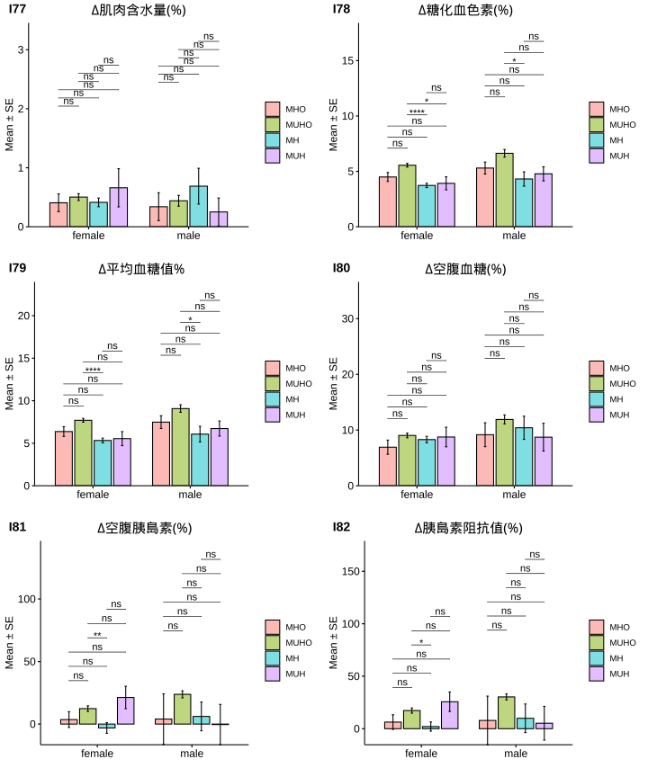

2.2 GIRC分析
DM x GIRC分佈(All)
| gender | . | Pattern I | Pattern II | Pattern III | Pattern IV | Pattern V | Sum |
|---|---|---|---|---|---|---|---|
| female | Normal | 189 (7.94%) | 569 (23.91%) | 313 (13.15%) | 41 (1.72%) | 33 (1.39%) | 1145 (48.11%) |
| Pre-DM | 37 (1.55%) | 174 (7.31%) | 327 (13.74%) | 53 (2.23%) | 11 (0.46%) | 602 (25.29%) | |
| DM | 14 (0.59%) | 36 (1.51%) | 150 (6.3%) | 43 (1.81%) | 85 (3.57%) | 328 (13.78%) | |
| Sum | 240 (10.08%) | 779 (32.73%) | 790 (33.19%) | 137 (5.76%) | 129 (5.42%) | 2075 (87.18%) | |
| male | Normal | 17 (0.71%) | 55 (2.31%) | 20 (0.84%) | 11 (0.46%) | 2 (0.08%) | 105 (4.41%) |
| Pre-DM | 4 (0.17%) | 51 (2.14%) | 27 (1.13%) | 26 (1.09%) | 1 (0.04%) | 109 (4.58%) | |
| DM | 7 (0.29%) | 16 (0.67%) | 31 (1.3%) | 12 (0.5%) | 25 (1.05%) | 91 (3.82%) | |
| Sum | 28 (1.18%) | 122 (5.13%) | 78 (3.28%) | 49 (2.06%) | 28 (1.18%) | 305 (12.82%) | |
| Sum | Normal | 206 (8.66%) | 624 (26.22%) | 333 (13.99%) | 52 (2.18%) | 35 (1.47%) | 1250 (52.52%) |
| Pre-DM | 41 (1.72%) | 225 (9.45%) | 354 (14.87%) | 79 (3.32%) | 12 (0.5%) | 711 (29.87%) | |
| DM | 21 (0.88%) | 52 (2.18%) | 181 (7.61%) | 55 (2.31%) | 110 (4.62%) | 419 (17.61%) | |
| Sum | 268 (11.26%) | 901 (37.86%) | 868 (36.47%) | 186 (7.82%) | 157 (6.6%) | 2380 (100%) | |
| Note: Before intervention |
| Pattern.I | Pattern.II | Pattern.III | Pattern.IV | Pattern.V | Sum | |
|---|---|---|---|---|---|---|
| Normal | 206 (16.48%) | 624 (49.92%) | 333 (26.64%) | 52 (4.16%) | 35 (2.8%) | 1250 (100%) |
| Pre-DM | 41 (5.77%) | 225 (31.65%) | 354 (49.79%) | 79 (11.11%) | 12 (1.69%) | 711 (100%) |
| DM | 21 (5.01%) | 52 (12.41%) | 181 (43.2%) | 55 (13.13%) | 110 (26.25%) | 419 (100%) |
| Total | 268 | 901 | 868 | 186 | 157 | 2380 |
| Note: Before intervention |
| Pattern.I | Pattern.II | Pattern.III | Pattern.IV | Pattern.V | Total | |
|---|---|---|---|---|---|---|
| Normal | 206 (76.87%) | 624 (69.26%) | 333 (38.36%) | 52 (27.96%) | 35 (22.29%) | 1250 |
| Pre-DM | 41 (15.3%) | 225 (24.97%) | 354 (40.78%) | 79 (42.47%) | 12 (7.64%) | 711 |
| DM | 21 (7.84%) | 52 (5.77%) | 181 (20.85%) | 55 (29.57%) | 110 (70.06%) | 419 |
| Sum | 268 (100%) | 901 (100%) | 868 (100%) | 186 (100%) | 157 (100%) | 2380 |
|
Note: Before intervention *IR = The “insulin response” during an OGTT. |
DM x GIRC分佈(Obesity Program)
| gender | . | Pattern I | Pattern II | Pattern III | Pattern IV | Pattern V | Sum |
|---|---|---|---|---|---|---|---|
| female | Normal | 56 (6.84%) | 221 (26.98%) | 116 (14.16%) | 17 (2.08%) | 11 (1.34%) | 421 (51.4%) |
| Pre-DM | 12 (1.47%) | 65 (7.94%) | 113 (13.8%) | 20 (2.44%) | 3 (0.37%) | 213 (26.01%) | |
| DM | 2 (0.24%) | 9 (1.1%) | 32 (3.91%) | 8 (0.98%) | 2 (0.24%) | 53 (6.47%) | |
| Sum | 70 (8.55%) | 295 (36.02%) | 261 (31.87%) | 45 (5.49%) | 16 (1.95%) | 687 (83.88%) | |
| male | Normal | 6 (0.73%) | 26 (3.17%) | 13 (1.59%) | 3 (0.37%) | 1 (0.12%) | 49 (5.98%) |
| Pre-DM | 3 (0.37%) | 32 (3.91%) | 12 (1.47%) | 19 (2.32%) | 1 (0.12%) | 67 (8.18%) | |
| DM | 0 (0%) | 1 (0.12%) | 8 (0.98%) | 6 (0.73%) | 1 (0.12%) | 16 (1.95%) | |
| Sum | 9 (1.1%) | 59 (7.2%) | 33 (4.03%) | 28 (3.42%) | 3 (0.37%) | 132 (16.12%) | |
| Sum | Normal | 62 (7.57%) | 247 (30.16%) | 129 (15.75%) | 20 (2.44%) | 12 (1.47%) | 470 (57.39%) |
| Pre-DM | 15 (1.83%) | 97 (11.84%) | 125 (15.26%) | 39 (4.76%) | 4 (0.49%) | 280 (34.19%) | |
| DM | 2 (0.24%) | 10 (1.22%) | 40 (4.88%) | 14 (1.71%) | 3 (0.37%) | 69 (8.42%) | |
| Sum | 79 (9.65%) | 354 (43.22%) | 294 (35.9%) | 73 (8.91%) | 19 (2.32%) | 819 (100%) | |
| Note: Before intervention |
| Pattern.I | Pattern.II | Pattern.III | Pattern.IV | Pattern.V | Sum | |
|---|---|---|---|---|---|---|
| Normal | 62 (13.19%) | 247 (52.55%) | 129 (27.45%) | 20 (4.26%) | 12 (2.55%) | 470 (100%) |
| Pre-DM | 15 (5.36%) | 97 (34.64%) | 125 (44.64%) | 39 (13.93%) | 4 (1.43%) | 280 (100%) |
| DM | 2 (2.9%) | 10 (14.49%) | 40 (57.97%) | 14 (20.29%) | 3 (4.35%) | 69 (100%) |
| Total | 79 | 354 | 294 | 73 | 19 | 819 |
| Note: Before intervention |
| Pattern.I | Pattern.II | Pattern.III | Pattern.IV | Pattern.V | Total | |
|---|---|---|---|---|---|---|
| Normal | 62 (78.48%) | 247 (69.77%) | 129 (43.88%) | 20 (27.4%) | 12 (63.16%) | 470 |
| Pre-DM | 15 (18.99%) | 97 (27.4%) | 125 (42.52%) | 39 (53.42%) | 4 (21.05%) | 280 |
| DM | 2 (2.53%) | 10 (2.82%) | 40 (13.61%) | 14 (19.18%) | 3 (15.79%) | 69 |
| Sum | 79 (100%) | 354 (100%) | 294 (100%) | 73 (100%) | 19 (100%) | 819 |
|
Note: Before intervention *IR = The “insulin response” during an OGTT. |


成效(Effectiveness)


成效(%)-Blood

| Pattern I | Pattern II | Pattern III | Pattern IV | Pattern V | Pattern I | Pattern II | Pattern III | Pattern IV | Pattern V | |
|---|---|---|---|---|---|---|---|---|---|---|
| 體重(T0) | 70.47 ± 1.48 | 73.2 ± 0.69 | 71.06 ± 0.76 | 92.76 ± 2.39 | 71.35 ± 3.75 | 95.87 ± 5.1 | 91.3 ± 2.04 | 91.34 ± 1.89 | 112.79 ± 3.92 | 92.43 ± 12.56 |
| BMI(T0) | 26.52 ± 0.5 | 28.22 ± 0.25 | 27.83 ± 0.27 | 35.86 ± 0.91 | 26.93 ± 1.18 | 30.43 ± 1.28 | 30.45 ± 0.64 | 30.9 ± 0.65 | 36.64 ± 1.33 | 30.96 ± 3.49 |
| 體脂重(T0) | 26.46 ± 0.98 | 29.64 ± 0.5 | 28.52 ± 0.53 | 43.65 ± 1.72 | 27.59 ± 2.62 | 30.01 ± 3.07 | 29.97 ± 1.41 | 30.6 ± 1.51 | 43.95 ± 3.08 | 29.67 ± 8.24 |
| 體脂率(T0) | 36.87 ± 0.73 | 39.85 ± 0.35 | 39.45 ± 0.38 | 46.43 ± 0.76 | 37.66 ± 1.74 | 30.82 ± 1.72 | 32.19 ± 0.84 | 32.98 ± 1.05 | 37.84 ± 1.39 | 30.97 ± 4.89 |
| 骨骼肌質量指數(T0) | 6.81 ± 0.09 | 6.87 ± 0.04 | 6.76 ± 0.04 | 7.83 ± 0.11 | 6.79 ± 0.22 | 8.96 ± 0.24 | 8.65 ± 0.11 | 8.76 ± 0.08 | 9.5 ± 0.15 | 8.9 ± 0.72 |
| 骨骼肌率(T0) | 34.35 ± 0.4 | 32.81 ± 0.19 | 32.92 ± 0.2 | 29.69 ± 0.41 | 33.77 ± 0.9 | 39.27 ± 1.09 | 38.33 ± 0.49 | 37.78 ± 0.62 | 35.37 ± 0.8 | 38.78 ± 2.98 |
| 內臟脂肪面積(T0) | 135.54 ± 5.43 | 154.09 ± 2.64 | 142.46 ± 2.81 | 195.62 ± 5.31 | 147.46 ± 15.09 | 137.38 ± 16.73 | 121.87 ± 5.32 | 132.88 ± 7.33 | 182.31 ± 11.85 | 131 ± 39.04 |
| 腰圍(T0) | 89.48 ± 1.32 | 93.38 ± 0.62 | 91.77 ± 0.69 | 110.53 ± 1.76 | 90.4 ± 3.38 | 105.71 ± 3.94 | 103.62 ± 1.57 | 104.01 ± 1.95 | 122.15 ± 3.13 | 102.2 ± 10.45 |
| 除脂體重(T0) | 44.02 ± 0.71 | 43.56 ± 0.3 | 42.54 ± 0.33 | 49.11 ± 0.89 | 43.76 ± 1.48 | 65.86 ± 2.55 | 61.33 ± 1.03 | 60.74 ± 0.86 | 68.83 ± 1.2 | 62.77 ± 4.88 |
| 基礎代謝率(T0) | 1320.83 ± 15.29 | 1310.86 ± 6.47 | 1288.91 ± 7.12 | 1430.87 ± 19.33 | 1315.12 ± 31.87 | 1792.22 ± 54.97 | 1694.58 ± 22.16 | 1682.21 ± 18.47 | 1856.75 ± 25.99 | 1726.33 ± 105.33 |
| 糖化血色素(T0) | 5.33 ± 0.04 | 5.44 ± 0.02 | 5.55 ± 0.03 | 5.72 ± 0.07 | 5.99 ± 0.47 | 5.57 ± 0.12 | 5.66 ± 0.05 | 5.78 ± 0.09 | 6.15 ± 0.16 | 6.13 ± 0.55 |
| 空腹血糖(T0) | 83.36 ± 1.23 | 84.39 ± 0.57 | 86.57 ± 0.7 | 89.62 ± 1.33 | 101.31 ± 13.68 | 85.11 ± 1.89 | 87 ± 1.14 | 92.18 ± 2.32 | 97.43 ± 5.11 | 100.33 ± 10.17 |
| 空腹胰島素(T0) | 7.72 ± 0.5 | 11.11 ± 0.32 | 10.77 ± 0.34 | 36.8 ± 2.16 | 6.9 ± 1.1 | 8.59 ± 1.49 | 14.05 ± 0.79 | 13.64 ± 0.98 | 36.61 ± 1.93 | 12.55 ± 2.22 |
| 胰島素阻抗值(T0) | 1.61 ± 0.12 | 2.36 ± 0.07 | 2.34 ± 0.08 | 8.13 ± 0.48 | 1.84 ± 0.39 | 1.83 ± 0.33 | 3.05 ± 0.19 | 3.19 ± 0.27 | 8.85 ± 0.67 | 3.23 ± 0.87 |
| β細胞功能(T0) | 168.5 ± 28.48 | 205.33 ± 8.58 | 190.41 ± 8.93 | 559.72 ± 43.61 | 106.92 ± 14.98 | 136.84 ± 19.64 | 232.24 ± 16.55 | 173.09 ± 17.53 | 525.41 ± 64.13 | 127.8 ± 12.51 |
| 三酸甘油脂(T0) | 81.4 ± 5.26 | 100.57 ± 2.99 | 113.2 ± 3.54 | 179.4 ± 23.11 | 85.56 ± 8.06 | 95.11 ± 17.23 | 155.08 ± 10.92 | 161.61 ± 20.4 | 178.89 ± 16.32 | 111 ± 23.59 |
| 總膽固醇(T0) | 201.53 ± 4.2 | 194.21 ± 2.08 | 198.93 ± 2.42 | 189.6 ± 6.1 | 212.38 ± 9.25 | 184.44 ± 7.97 | 204.02 ± 5.39 | 187.73 ± 5.61 | 189.82 ± 7.95 | 161 ± 13.01 |
| 高密度脂蛋白(T0) | 65.17 ± 1.98 | 56.05 ± 0.65 | 55.05 ± 0.78 | 44.98 ± 1.24 | 69.34 ± 3.39 | 47.34 ± 2.35 | 45.71 ± 1.18 | 46.15 ± 1.52 | 39.71 ± 1.34 | 41.27 ± 1.18 |
| 低密度脂蛋白(T0) | 119.27 ± 3.51 | 121.31 ± 1.86 | 124.71 ± 2.1 | 123.89 ± 5.58 | 125.5 ± 8.15 | 123 ± 8.12 | 135.83 ± 4.83 | 119.36 ± 5.59 | 125.54 ± 5.92 | 103.67 ± 14.19 |
| 尿酸(T0) | 4.9 ± 0.13 | 5.19 ± 0.07 | 5.23 ± 0.06 | 5.97 ± 0.16 | 4.79 ± 0.28 | 6.42 ± 0.38 | 6.96 ± 0.2 | 6.33 ± 0.26 | 7.41 ± 0.3 | 6.33 ± 0.58 |
| 澱粉脢(T0) | 49.6 ± 2.11 | 46.69 ± 0.9 | 44.42 ± 0.86 | 36.33 ± 1.72 | 46.5 ± 4.6 | 51.78 ± 8.93 | 43.39 ± 2.19 | 41.73 ± 2.1 | 38.64 ± 2.6 | 39.67 ± 8.01 |
| 解脂脢(T0) | 23.51 ± 1.45 | 25.59 ± 1.06 | 23.72 ± 0.73 | 26.76 ± 3.63 | 23.75 ± 3.08 | 22.89 ± 4.82 | 29.14 ± 3.8 | 22.97 ± 2.15 | 22.61 ± 2.26 | 37.33 ± 12.73 |
| 體重(T1) | 65.76 ± 1.34 | 68.27 ± 0.66 | 66.39 ± 0.73 | 86.97 ± 2.49 | 66.7 ± 3.29 | 89.54 ± 5.16 | 84.66 ± 2.02 | 84.15 ± 1.73 | 105.14 ± 3.87 | 88.77 ± 12.71 |
| BMI(T1) | 24.75 ± 0.45 | 26.31 ± 0.24 | 25.92 ± 0.25 | 33.62 ± 0.96 | 25.18 ± 1.02 | 28.4 ± 1.3 | 28.24 ± 0.64 | 28.46 ± 0.63 | 34.15 ± 1.3 | 29.72 ± 3.57 |
| 體脂重(T1) | 23.44 ± 0.91 | 26.26 ± 0.48 | 25.35 ± 0.51 | 39.73 ± 1.81 | 24.38 ± 2.24 | 25.66 ± 3.03 | 25.19 ± 1.44 | 25.5 ± 1.46 | 38.69 ± 3.01 | 27.37 ± 8.83 |
| 體脂率(T1) | 34.96 ± 0.78 | 37.73 ± 0.37 | 37.44 ± 0.39 | 44.82 ± 0.89 | 35.59 ± 1.58 | 27.93 ± 1.96 | 28.85 ± 0.96 | 29.71 ± 1.21 | 35.51 ± 1.48 | 29.4 ± 6.04 |
| 骨骼肌質量指數(T1) | 6.54 ± 0.08 | 6.6 ± 0.04 | 6.51 ± 0.04 | 7.51 ± 0.12 | 6.52 ± 0.19 | 8.68 ± 0.22 | 8.37 ± 0.1 | 8.45 ± 0.08 | 9.23 ± 0.16 | 8.67 ± 0.69 |
| 骨骼肌率(T1) | 35.27 ± 0.43 | 33.82 ± 0.2 | 33.84 ± 0.21 | 30.47 ± 0.48 | 34.84 ± 0.79 | 40.78 ± 1.17 | 40.06 ± 0.56 | 39.52 ± 0.7 | 36.59 ± 0.85 | 39.62 ± 3.57 |
| 內臟脂肪面積(T1) | 119.3 ± 5.3 | 135.13 ± 2.62 | 124.44 ± 2.73 | 182.33 ± 6.66 | 120.4 ± 14.84 | 116.93 ± 14.94 | 97.29 ± 4.75 | 107.69 ± 6.69 | 165.59 ± 12 | 119.77 ± 40.91 |
| 腰圍(T1) | 85.09 ± 1.26 | 88.46 ± 0.6 | 87.08 ± 0.68 | 105.75 ± 1.93 | 86.95 ± 2.99 | 99.1 ± 4.55 | 96.34 ± 1.6 | 96.63 ± 2.01 | 114.49 ± 3.29 | 98.53 ± 10.7 |
| 除脂體重(T1) | 42.32 ± 0.66 | 42.02 ± 0.28 | 41.04 ± 0.32 | 47.24 ± 0.89 | 42.33 ± 1.34 | 63.89 ± 2.48 | 59.47 ± 0.97 | 58.65 ± 0.8 | 66.45 ± 1.16 | 61.4 ± 4.69 |
| 基礎代謝率(T1) | 1284.06 ± 14.24 | 1277.56 ± 6.1 | 1256.38 ± 6.88 | 1390.33 ± 19.28 | 1284.12 ± 28.85 | 1750.56 ± 53.47 | 1654.46 ± 20.91 | 1636.88 ± 17.28 | 1805.25 ± 25.01 | 1696 ± 101.6 |
| 糖化血色素(T1) | 5.15 ± 0.04 | 5.2 ± 0.02 | 5.26 ± 0.02 | 5.32 ± 0.05 | 5.41 ± 0.17 | 5.4 ± 0.1 | 5.34 ± 0.04 | 5.38 ± 0.06 | 5.5 ± 0.08 | 5.7 ± 0.44 |
| 空腹血糖(T1) | 76.71 ± 0.96 | 76.28 ± 0.47 | 77.7 ± 0.63 | 80.36 ± 1.19 | 73.94 ± 2.74 | 83.78 ± 3.19 | 77.92 ± 1.03 | 77.85 ± 1.85 | 81.11 ± 1.66 | 83 ± 1.73 |
| 空腹胰島素(T1) | 6.76 ± 0.59 | 9.14 ± 0.38 | 8.92 ± 0.36 | 21.66 ± 1.84 | 4.97 ± 0.84 | 9.27 ± 2.36 | 10.46 ± 1 | 9.07 ± 1.04 | 24.06 ± 3.5 | 7.83 ± 2.91 |
| 胰島素阻抗值(T1) | 1.32 ± 0.13 | 1.78 ± 0.08 | 1.77 ± 0.08 | 4.36 ± 0.39 | 0.96 ± 0.19 | 1.97 ± 0.51 | 2.07 ± 0.2 | 1.81 ± 0.22 | 4.91 ± 0.87 | 1.63 ± 0.61 |
| β細胞功能(T1) | 174.82 ± 33.71 | 274.32 ± 24.22 | 318.61 ± 40.12 | 661.74 ± 112.85 | -164.01 ± 272.09 | 166.57 ± 36.97 | 257.3 ± 33.28 | 167.46 ± 66.38 | 549.32 ± 73.53 | 133.8 ± 42.73 |
| 三酸甘油脂(T1) | 77.94 ± 3.03 | 90.85 ± 2.13 | 96.6 ± 3.45 | 125.24 ± 8.82 | 79.75 ± 7.02 | 67.89 ± 7.4 | 123.53 ± 6.85 | 109 ± 7.14 | 165.32 ± 18.44 | 64.33 ± 11.46 |
| 總膽固醇(T1) | 210.36 ± 5.13 | 199.85 ± 2.67 | 199.27 ± 2.79 | 180.09 ± 5.72 | 219.44 ± 12.14 | 180.33 ± 13.37 | 198.17 ± 7 | 192.39 ± 6.36 | 186.64 ± 9.32 | 157 ± 12.58 |
| 高密度脂蛋白(T1) | 58.53 ± 1.7 | 50.3 ± 0.59 | 49.62 ± 0.72 | 40.37 ± 1.24 | 60.02 ± 2.9 | 45.91 ± 2.59 | 41.26 ± 1.05 | 44.14 ± 1.82 | 34.92 ± 1.1 | 42.27 ± 4.9 |
| 低密度脂蛋白(T1) | 134.6 ± 4.49 | 129.89 ± 2.27 | 129 ± 2.4 | 119.6 ± 5.2 | 136.5 ± 10.87 | 122 ± 11.46 | 133.81 ± 5.92 | 126.58 ± 5.73 | 126.04 ± 7.11 | 104 ± 7.21 |
| 尿酸(T1) | 4.01 ± 0.11 | 4.6 ± 0.07 | 4.6 ± 0.07 | 5.21 ± 0.21 | 4.83 ± 0.38 | 4.83 ± 0.4 | 5.98 ± 0.2 | 5.52 ± 0.24 | 6.73 ± 0.31 | 4.93 ± 0.09 |
| 澱粉脢(T1) | 51.8 ± 2.22 | 47.94 ± 0.91 | 45.71 ± 0.99 | 37.69 ± 2.27 | 46.94 ± 3.86 | 49.33 ± 4.08 | 43.86 ± 2.71 | 42.45 ± 2.5 | 42 ± 3 | 39 ± 7.77 |
| 解脂脢(T1) | 36.17 ± 2.1 | 38.25 ± 1.43 | 34.74 ± 1.14 | 40.49 ± 10 | 30.25 ± 3.24 | 38.22 ± 9.03 | 42.78 ± 5.61 | 31.84 ± 2.5 | 35.86 ± 4.42 | 28.33 ± 9.53 |
| 年齡 | 39 ± 0.89 | 37.8 ± 0.54 | 40.56 ± 0.7 | 32.4 ± 1.46 | 46.19 ± 1.81 | 36.89 ± 4.9 | 38.86 ± 1.44 | 44.21 ± 2.06 | 32.86 ± 1.63 | 37.33 ± 2.73 |
| 飲食紀錄完成率(%) | 77.29 ± 3.27 | 75.13 ± 1.64 | 74.79 ± 1.81 | 66.2 ± 4.38 | 79.83 ± 5.12 | 53.34 ± 12.68 | 74.67 ± 3.81 | 77.44 ± 4.73 | 57.11 ± 6.57 | 76.61 ± 11.87 |
| 紀錄數量 | 228.56 ± 17.01 | 202.13 ± 9.59 | 186.77 ± 7.82 | 152.99 ± 18.29 | 188.07 ± 24.31 | 109.16 ± 25.92 | 208.01 ± 25.63 | 207.6 ± 27.56 | 134.54 ± 30.53 | 122.14 ± 24.01 |
| 上傳照片張數 | 162.85 ± 11.15 | 164.51 ± 6.37 | 163.48 ± 6.52 | 129.67 ± 12.83 | 160.74 ± 26.92 | 140.39 ± 42.04 | 161.04 ± 14.11 | 195.4 ± 21.79 | 128.37 ± 29.04 | 174.35 ± 48.34 |
| 碳水攝取率(E%) | 19.04 ± 0.76 | 18.52 ± 0.41 | 18.85 ± 0.4 | 17.47 ± 0.86 | 16.83 ± 1.71 | 20.58 ± 1.91 | 18.1 ± 0.91 | 17.35 ± 1.11 | 18.98 ± 1.8 | 16.67 ± 1.83 |
| 蛋白攝取率(E%) | 27.52 ± 0.34 | 27.5 ± 0.16 | 27.37 ± 0.17 | 28.22 ± 0.44 | 28.1 ± 0.65 | 27.07 ± 1.02 | 28.12 ± 0.36 | 27.6 ± 0.51 | 27.48 ± 0.76 | 30.75 ± 0.69 |
| 脂肪攝取率(E%) | 53.45 ± 0.6 | 53.97 ± 0.31 | 53.78 ± 0.29 | 54.32 ± 0.65 | 55.07 ± 1.31 | 52.35 ± 1.29 | 53.78 ± 0.66 | 55.05 ± 0.82 | 53.54 ± 1.29 | 52.58 ± 1.19 |
| 總攝取熱量(日) | 984.1 ± 19.93 | 982.44 ± 9.47 | 986.07 ± 9.5 | 973.46 ± 32.96 | 1005.5 ± 45.64 | 1141.23 ± 45.43 | 1096.04 ± 27.74 | 1146.56 ± 31.65 | 1059.21 ± 58.43 | 1129.26 ± 50.89 |
| 綠燈率 | 80.27 ± 1.86 | 81.76 ± 0.98 | 82.17 ± 0.97 | 82.17 ± 2.1 | 89.01 ± 2.14 | 68.19 ± 6.64 | 80.83 ± 2.17 | 86.33 ± 2.18 | 76.2 ± 4.78 | 91.19 ± 3.02 |
| 黃燈率 | 17.39 ± 1.78 | 15.62 ± 0.86 | 15.63 ± 0.88 | 16.14 ± 1.88 | 9.69 ± 1.96 | 26.64 ± 5.09 | 16.9 ± 1.94 | 12.13 ± 1.71 | 20.09 ± 4.2 | 7.31 ± 2.56 |
| 紅燈率 | 2.34 ± 0.45 | 2.62 ± 0.31 | 2.19 ± 0.29 | 1.69 ± 0.46 | 1.3 ± 0.97 | 5.16 ± 3.18 | 2.28 ± 0.64 | 1.54 ± 0.64 | 3.7 ± 1.47 | 1.5 ± 1.5 |
| 水果(日) | 0.08 ± 0.01 | 0.07 ± 0.01 | 0.07 ± 0.01 | 0.03 ± 0.01 | 0.09 ± 0.03 | 0.06 ± 0.04 | 0.05 ± 0.01 | 0.02 ± 0.01 | 0.02 ± 0.01 | 0.02 ± 0.02 |
| 蔬菜(日) | 2.87 ± 0.15 | 2.8 ± 0.07 | 2.84 ± 0.08 | 2.47 ± 0.18 | 3.27 ± 0.32 | 2.29 ± 0.48 | 2.96 ± 0.18 | 3.42 ± 0.25 | 2.46 ± 0.3 | 2.98 ± 1 |
| 全穀雜糧(日) | 1.5 ± 0.1 | 1.45 ± 0.07 | 1.5 ± 0.06 | 1.46 ± 0.16 | 1.17 ± 0.2 | 2.23 ± 0.24 | 1.84 ± 0.15 | 1.57 ± 0.18 | 1.61 ± 0.24 | 1.67 ± 0.41 |
| 蛋豆魚肉(日) | 7.41 ± 0.28 | 7.19 ± 0.14 | 7.32 ± 0.15 | 7.19 ± 0.39 | 8.28 ± 0.74 | 8.05 ± 1.01 | 8.82 ± 0.35 | 8.93 ± 0.51 | 7.26 ± 0.74 | 9.51 ± 1.16 |
| 乳品(日) | 0.06 ± 0.01 | 0.05 ± 0 | 0.06 ± 0.01 | 0.03 ± 0.01 | 0.02 ± 0.01 | 0.08 ± 0.04 | 0.03 ± 0.01 | 0.04 ± 0.01 | 0.03 ± 0.01 | 0.02 ± 0.02 |
| 油脂(日) | 3.32 ± 0.15 | 3.19 ± 0.07 | 3.23 ± 0.07 | 3.04 ± 0.18 | 3.53 ± 0.27 | 3.68 ± 0.44 | 3.56 ± 0.15 | 3.82 ± 0.22 | 2.99 ± 0.31 | 2.73 ± 0.53 |
| ∆體重 | 4.72 ± 0.27 | 4.92 ± 0.13 | 4.67 ± 0.13 | 5.8 ± 0.6 | 4.65 ± 0.73 | 6.32 ± 1.31 | 6.64 ± 0.43 | 7.19 ± 0.57 | 7.65 ± 0.56 | 3.67 ± 0.38 |
| ∆BMI | 1.77 ± 0.1 | 1.91 ± 0.05 | 1.91 ± 0.1 | 2.24 ± 0.23 | 1.75 ± 0.26 | 2.03 ± 0.42 | 2.21 ± 0.14 | 2.44 ± 0.19 | 2.49 ± 0.18 | 1.24 ± 0.14 |
| ∆體脂重 | 3.02 ± 0.22 | 3.39 ± 0.11 | 3.16 ± 0.11 | 3.92 ± 0.41 | 3.22 ± 0.83 | 4.36 ± 0.93 | 4.78 ± 0.3 | 5.1 ± 0.44 | 5.26 ± 0.56 | 2.3 ± 0.75 |
| ∆體脂率 | 1.92 ± 0.23 | 2.12 ± 0.11 | 2.01 ± 0.13 | 1.61 ± 0.29 | 2.07 ± 0.81 | 2.89 ± 0.73 | 3.33 ± 0.3 | 3.27 ± 0.39 | 2.32 ± 0.39 | 1.57 ± 1.17 |
| ∆骨骼肌質量指數 | -0.27 ± 0.03 | -0.27 ± 0.01 | -0.25 ± 0.01 | -0.32 ± 0.04 | -0.27 ± 0.06 | -0.28 ± 0.09 | -0.28 ± 0.03 | -0.31 ± 0.05 | -0.27 ± 0.05 | -0.23 ± 0.03 |
| ∆骨骼肌重 | -1.01 ± 0.1 | -0.94 ± 0.05 | -0.93 ± 0.05 | -1.11 ± 0.15 | -0.82 ± 0.28 | -1.21 ± 0.33 | -1.19 ± 0.17 | -1.28 ± 0.21 | -1.46 ± 0.2 | -0.8 ± 0.15 |
| ∆內臟脂肪面積 | 15.36 ± 1.26 | 16.85 ± 0.6 | 17.11 ± 0.59 | 15.46 ± 3.03 | 16.46 ± 2.29 | 20.45 ± 4.07 | 25.73 ± 1.57 | 25.34 ± 2.64 | 23.23 ± 2.08 | 11.23 ± 3.95 |
| ∆腰圍 | 4.39 ± 0.33 | 4.92 ± 0.17 | 4.7 ± 0.17 | 4.78 ± 0.71 | 3.45 ± 0.95 | 6.61 ± 1.39 | 7.28 ± 0.45 | 7.37 ± 0.65 | 7.66 ± 0.78 | 3.67 ± 1.6 |
| ∆除脂體重 | 1.7 ± 0.17 | 1.54 ± 0.08 | 1.51 ± 0.09 | 1.87 ± 0.27 | 1.43 ± 0.5 | 1.97 ± 0.59 | 1.86 ± 0.28 | 2.09 ± 0.35 | 2.38 ± 0.34 | 1.37 ± 0.39 |
| ∆基礎代謝率 | -36.77 ± 3.63 | -33.3 ± 1.71 | -32.54 ± 1.95 | -40.53 ± 5.81 | -31 ± 10.83 | -41.67 ± 12.58 | -40.12 ± 6.06 | -45.33 ± 7.7 | -51.5 ± 7.26 | -30.33 ± 7.86 |
| ∆糖化血色素 | 0.18 ± 0.02 | 0.24 ± 0.01 | 0.29 ± 0.02 | 0.39 ± 0.05 | 0.58 ± 0.31 | 0.17 ± 0.05 | 0.31 ± 0.03 | 0.41 ± 0.05 | 0.65 ± 0.14 | 0.43 ± 0.12 |
| ∆空腹血糖 | 6.64 ± 0.96 | 8.11 ± 0.6 | 8.87 ± 0.68 | 9.27 ± 1.38 | 27.38 ± 14.2 | 1.33 ± 2.62 | 9.08 ± 1.25 | 14.33 ± 2.39 | 16.32 ± 5.02 | 17.33 ± 9.61 |
| ∆空腹胰島素 | 0.96 ± 0.54 | 1.97 ± 0.37 | 1.85 ± 0.33 | 15.13 ± 2.61 | 1.92 ± 1.1 | -0.68 ± 1.77 | 3.59 ± 0.85 | 4.58 ± 1.21 | 12.7 ± 3.49 | 4.72 ± 2.15 |
| ∆胰島素阻抗值 | 0.29 ± 0.12 | 0.58 ± 0.08 | 0.57 ± 0.08 | 3.78 ± 0.58 | 0.88 ± 0.37 | -0.13 ± 0.41 | 0.98 ± 0.19 | 1.39 ± 0.29 | 3.94 ± 0.91 | 1.6 ± 0.74 |
| ∆β細胞功能 | 6.32 ± 53.14 | 66.14 ± 23.89 | 128.2 ± 39.39 | 102.02 ± 103.44 | -270.92 ± 279.88 | 29.72 ± 23.7 | 25.06 ± 30.29 | -5.63 ± 69.02 | 23.91 ± 81.78 | 6 ± 50.77 |
| ∆三酸甘油脂 | 3.46 ± 4.33 | 9.6 ± 2.46 | 16.6 ± 3.16 | 54.16 ± 20.8 | 5.81 ± 10.85 | 27.22 ± 16.76 | 31.56 ± 7.83 | 52.61 ± 16.39 | 13.57 ± 13.81 | 46.67 ± 17.63 |
| ∆總膽固醇 | -8.83 ± 4.91 | -5.69 ± 1.95 | -0.34 ± 2.02 | 9.51 ± 5.92 | -7.06 ± 10.84 | 4.11 ± 12.04 | 5.85 ± 5.12 | -4.67 ± 5.12 | 3.18 ± 6.11 | 4 ± 21.7 |
| ∆高密度脂蛋白 | -6.63 ± 1.17 | -5.79 ± 0.49 | -5.43 ± 0.52 | -4.6 ± 1.14 | -9.32 ± 2.68 | -1.43 ± 3.03 | -4.44 ± 0.8 | -2.01 ± 1.76 | -4.79 ± 1.05 | 1 ± 4.75 |
| ∆低密度脂蛋白 | -15.33 ± 4.29 | -8.6 ± 1.65 | -4.29 ± 1.78 | 4.29 ± 5.44 | -11 ± 9.38 | 1 ± 10.94 | 2.02 ± 4.35 | -7.21 ± 4.96 | -0.5 ± 4.6 | -0.33 ± 13.59 |
| ∆尿酸 | -0.89 ± 0.11 | -0.59 ± 0.07 | -0.63 ± 0.07 | -0.77 ± 0.22 | 0.04 ± 0.25 | -1.59 ± 0.35 | -0.97 ± 0.17 | -0.81 ± 0.23 | -0.68 ± 0.28 | -1.4 ± 0.66 |
| ∆澱粉脢 | 2.2 ± 1.07 | 1.34 ± 0.57 | 1.29 ± 0.62 | 1.36 ± 1.47 | 0.44 ± 2.21 | -2.44 ± 6.33 | 0.47 ± 1.76 | 0.73 ± 1.05 | 3.36 ± 2.08 | -0.67 ± 3.84 |
| ∆解脂脢 | 12.66 ± 1.38 | 12.6 ± 1.28 | 11.02 ± 0.95 | 13.73 ± 6.93 | 6.5 ± 1.93 | 15.33 ± 6.41 | 13.64 ± 4.76 | 8.41 ± 1.85 | 13.25 ± 3.95 | -9 ± 7.02 |
| ∆體重(%) | 6.57 ± 0.33 | 6.73 ± 0.17 | 6.58 ± 0.18 | 6.43 ± 0.69 | 6.32 ± 0.73 | 6.72 ± 1.44 | 7.36 ± 0.48 | 7.82 ± 0.54 | 6.89 ± 0.48 | 4.15 ± 0.83 |
| ∆BMI(%) | 6.57 ± 0.33 | 6.75 ± 0.17 | 6.74 ± 0.25 | 6.45 ± 0.7 | 6.31 ± 0.73 | 6.73 ± 1.44 | 7.33 ± 0.48 | 7.91 ± 0.55 | 6.89 ± 0.48 | 4.15 ± 0.83 |
| ∆體脂重(%) | 11.6 ± 0.84 | 11.79 ± 0.38 | 11.38 ± 0.4 | 9.72 ± 1.09 | 10.82 ± 2.52 | 15.55 ± 3.77 | 17.45 ± 1.25 | 17.48 ± 1.55 | 12.88 ± 1.4 | 10.63 ± 6.15 |
| ∆體脂率(%) | 5.45 ± 0.71 | 5.48 ± 0.3 | 5.19 ± 0.33 | 3.65 ± 0.66 | 4.95 ± 2.25 | 9.8 ± 2.77 | 11.06 ± 1.05 | 10.59 ± 1.35 | 6.48 ± 1.16 | 6.77 ± 5.61 |
| ∆骨骼肌質量指數(%) | -3.83 ± 0.38 | -3.82 ± 0.17 | -3.66 ± 0.19 | -4.09 ± 0.59 | -3.76 ± 0.9 | -3.03 ± 1.01 | -3.13 ± 0.39 | -3.46 ± 0.5 | -2.86 ± 0.51 | -2.6 ± 0.17 |
| ∆骨骼肌重(%) | -4.09 ± 0.38 | -3.89 ± 0.19 | -3.95 ± 0.25 | -4.1 ± 0.59 | -3.18 ± 1.15 | -3.23 ± 0.88 | -3.29 ± 0.47 | -3.66 ± 0.59 | -3.7 ± 0.5 | -2.28 ± 0.43 |
| ∆內臟脂肪面積(%) | 12.18 ± 0.97 | 11.78 ± 0.45 | 12.95 ± 0.5 | 8.7 ± 1.63 | 13.03 ± 1.85 | 15.23 ± 3.26 | 22.26 ± 1.4 | 19.75 ± 1.92 | 14.06 ± 1.33 | 12.08 ± 7.55 |
| ∆腰圍(%) | 4.85 ± 0.36 | 5.24 ± 0.18 | 5.12 ± 0.19 | 4.39 ± 0.64 | 3.6 ± 0.95 | 6.45 ± 1.46 | 7.08 ± 0.43 | 7.14 ± 0.63 | 6.41 ± 0.66 | 3.7 ± 1.83 |
| ∆除脂體重(%) | 3.78 ± 0.36 | 3.46 ± 0.18 | 3.46 ± 0.23 | 3.79 ± 0.56 | 3.06 ± 1.14 | 2.95 ± 0.9 | 2.91 ± 0.44 | 3.37 ± 0.57 | 3.43 ± 0.47 | 2.16 ± 0.58 |
| ∆基礎代謝率(%) | -2.73 ± 0.26 | -2.5 ± 0.13 | -2.48 ± 0.16 | -2.81 ± 0.41 | -2.24 ± 0.82 | -2.3 ± 0.71 | -2.29 ± 0.35 | -2.65 ± 0.45 | -2.75 ± 0.38 | -1.74 ± 0.42 |
| ∆糖化血色素(%) | 3.3 ± 0.45 | 4.36 ± 0.23 | 5.02 ± 0.27 | 6.61 ± 0.69 | 6.64 ± 2.61 | 2.91 ± 0.84 | 5.39 ± 0.52 | 6.74 ± 0.82 | 9.64 ± 1.64 | 6.83 ± 1.49 |
| ∆空腹血糖(%) | 7.41 ± 1.04 | 8.88 ± 0.64 | 9.6 ± 0.72 | 9.84 ± 1.44 | 17.44 ± 5.17 | 1.54 ± 3.06 | 9.89 ± 1.37 | 14.28 ± 2.58 | 13.31 ± 2.98 | 15.75 ± 7.56 |
| ∆空腹胰島素(%) | 3.01 ± 8.16 | 6.45 ± 3.77 | 6.05 ± 4.22 | 37.01 ± 6 | 13.48 ± 13.7 | -15.79 ± 23.4 | 23.04 ± 5.31 | 13.63 ± 20.13 | 32.73 ± 8.69 | 40.69 ± 19.79 |
| ∆胰島素阻抗值(%) | 7.96 ± 8.36 | 11.95 ± 3.78 | 11.46 ± 4.87 | 42.15 ± 5.77 | 24.16 ± 12.72 | -19.66 ± 27.63 | 28.31 ± 5.69 | 18.4 ± 23.23 | 40.14 ± 8.88 | 50.28 ± 17.31 |
| ∆β細胞功能(%) | 43.46 ± 24.08 | 63.18 ± 18.42 | 76.55 ± 19.69 | 23.12 ± 17.69 | -135.96 ± 158.47 | 18.89 ± 12.54 | 28.19 ± 13.89 | -5.91 ± 36.2 | 28.32 ± 18.44 | 10.38 ± 37.74 |
| ∆三酸甘油脂(%) | -9.06 ± 5.13 | -1.33 ± 2.35 | 6.82 ± 2.32 | 17.11 ± 4.78 | -8.79 ± 19.19 | 13.87 ± 14.84 | 11.02 ± 4.66 | 19.47 ± 5.11 | 3.82 ± 7.08 | 39.14 ± 8.97 |
| ∆總膽固醇(%) | -5.52 ± 2.35 | -3.42 ± 0.99 | -0.79 ± 1.02 | 3.55 ± 2.46 | -4.21 ± 5.08 | 1.93 ± 6.41 | 2.57 ± 2.43 | -3.26 ± 2.91 | 1.34 ± 3.24 | 0.76 ± 13.2 |
| ∆高密度脂蛋白(%) | -9 ± 1.67 | -9.26 ± 0.82 | -8.79 ± 0.92 | -9.07 ± 2.26 | -12.48 ± 3.48 | -1.75 ± 6.12 | -8.92 ± 1.59 | -3 ± 3.86 | -10.88 ± 2.47 | 2.4 ± 11.51 |
| ∆低密度脂蛋白(%) | -15.41 ± 3.57 | -8.8 ± 1.43 | -5.11 ± 1.49 | 0.43 ± 3.53 | -10.78 ± 7.87 | -0.66 ± 8.18 | 0.63 ± 3.36 | -9.69 ± 5.68 | -0.97 ± 4.5 | -3.12 ± 12.55 |
| ∆尿酸(%) | -16.95 ± 2.02 | -9.85 ± 1.26 | -10.52 ± 1.32 | -11.51 ± 3.81 | 1.15 ± 5.04 | -24.16 ± 4.83 | -12.6 ± 2.74 | -10.69 ± 3.67 | -8.17 ± 3.4 | -20.42 ± 9.28 |
| ∆澱粉脢(%) | 6.17 ± 2.1 | 4.49 ± 1.09 | 3.99 ± 1.34 | 4.02 ± 3.28 | 4.55 ± 4.62 | 3.53 ± 7.95 | 2.17 ± 2.99 | 1.55 ± 2.32 | 11.55 ± 6 | -1.31 ± 10.48 |
| ∆解脂脢(%) | 63.09 ± 6.88 | 65.08 ± 4.52 | 59.61 ± 5.12 | 52.05 ± 9.51 | 38.85 ± 11.77 | 81.43 ± 31.73 | 61.63 ± 10.4 | 48.61 ± 12.38 | 84.92 ± 26.72 | -22.16 ± 11.19 |
|
Significance: |
Pattern改善分析
| Pattern.I | Pattern.II | Pattern.III | Pattern.IV | Pattern.V | Sum | |
|---|---|---|---|---|---|---|
| Pattern I | 20 (43.48%) | 18 (39.13%) | 5 (10.87%) | 1 (2.17%) | 2 (4.35%) | 46 (100%) |
| Pattern II | 42 (24.42%) | 98 (56.98%) | 22 (12.79%) | 8 (4.65%) | 2 (1.16%) | 172 (100%) |
| Pattern III | 15 (14.85%) | 53 (52.48%) | 29 (28.71%) | 3 (2.97%) | 1 (0.99%) | 101 (100%) |
| Pattern IV | 2 (6.45%) | 17 (54.84%) | 3 (9.68%) | 9 (29.03%) | 0 (0%) | 31 (100%) |
| Pattern V | 3 (37.5%) | 3 (37.5%) | 2 (25%) | 0 (0%) | 0 (0%) | 8 (100%) |
| Total | 82 | 189 | 61 | 21 | 5 | 358 |
|
Note: · Row= Pre-intervention Insulin Response Pattern during an OGTT. · Column= Post-intervention Insulin Response Pattern during an OGTT. |